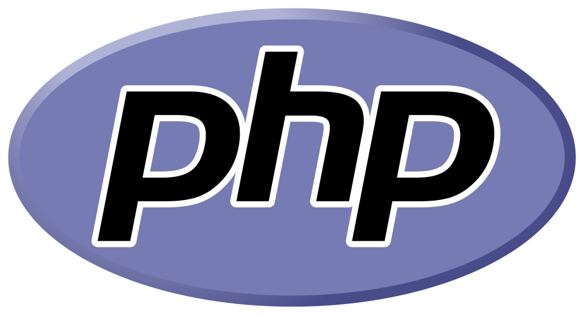
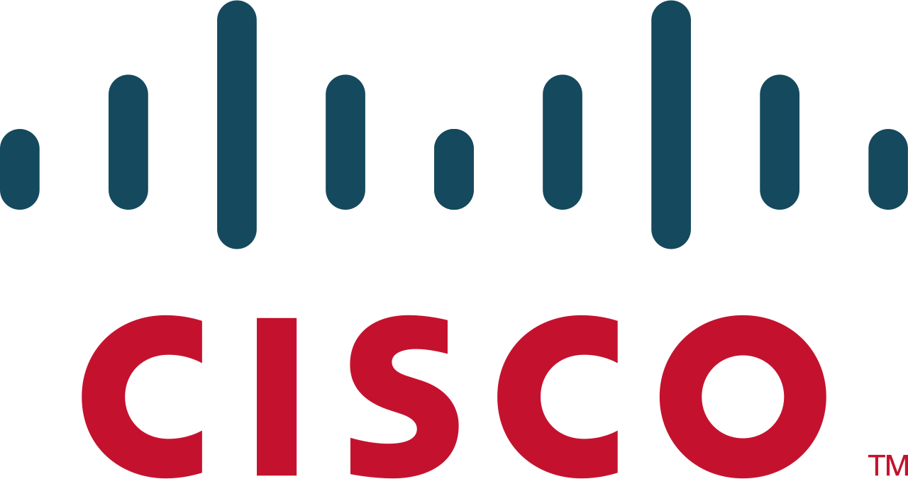
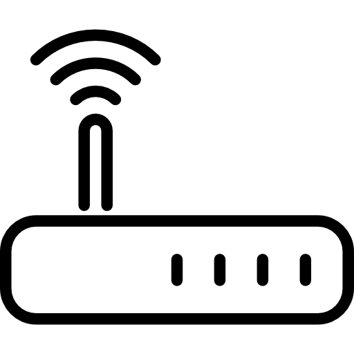
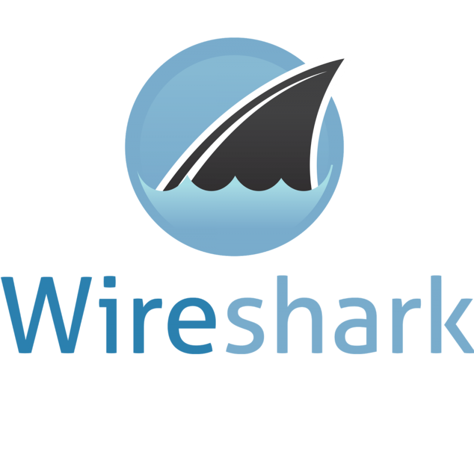

Bonjour, je suis Nathan Mausse
Étudiant BTS SIO — Développeur Web
À propos
Passionné par l’informatique depuis plusieurs années, j’aime comprendre comment fonctionnent les systèmes et créer des solutions concrètes. Aujourd’hui en BTS SIO SLAM, je développe mes compétences en développement web, cybersécurité et réseaux avec un objectif clair : progresser chaque jour.
Vaux-Le-Pénil (77000) — France
Compétences techniques
Développement
HTML  ,
CSS
,
CSS  ,
JavaScript
,
JavaScript  ,
PHP
,
PHP

, JavaRéseau / Sécurité
Cisco

, Switches / Routers
, Nmap
Base de données
SQL  ,
Microsoft SQL Server
,
Microsoft SQL Server 
Systèmes
Linux
Parcours professionnel
Job d’été — Crédit Agricole Titres (Brunoy)
août 2024 & août 2025
Missions réalisées au sein de l’entreprise dans le service coupon national et international, ainsi que dans le service d’épargne salariale.
Stage informatique — Crédit Agricole Titres (Brunoy)
janvier 2026
Stage réalisé au sein de l’équipe informatique (service négociations).
Projets informatiques
Site restauration
Création d'un site où l'on peut réserver des plats, la quantité, etc...
Voir le projetProjet Symfony
Création du front end et back end d'un site vitrine pour un club de sport au choix en utilisant Symfony.
Voir le projetRésumé de la formation BTS SIO
Le BTS SIO (Services Informatiques aux Organisations) est un diplôme français de niveau bac+2 axé sur les besoins des entreprises en matière de gestion, développement et sécurité des systèmes d’information.
Référentiel BTS SIOOption SLAM
Solutions logicielles et applications métiers (Développement).
Option SISR
Solutions d’infrastructure, systèmes et réseaux.
Veille technologique
Cybersécurité et Menaces Émergentes
Ma veille porte sur l'évolution des attaques informatiques et les nouvelles méthodes de protection (IA, Zero Trust). Je surveille les vulnérabilités critiques via l'ANSSI et des flux spécialisés.